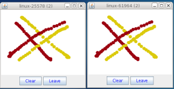

Copyright Red Hat 1998 - 2015
This document is licensed under the "Creative Commons Attribution-ShareAlike (CC-BY-SA) 3.0" license.
This is a short tutorial on how to install JGroups and write a simple application. The goal is to show how to configure JGroups and how to write a simple application showing the major methods of the API.
Bela Ban, Kreuzlingen, Switzerland, August 2014
1. Installation
1.1. Download
JGroups can be downloaded here. For this tutorial, I’m using the binary version of JGroups 3.0, so download one of the jgroups-3.x.y.jar files (e.g. jgroups-3.0.0.Final.jar).
This JAR file contains:
-
JGroups core, demo and (selected) test classes
-
INSTALL.html: detailed configuration instructions plus trouble shooting
-
Sample configuration files, e.g. udp.xml or tcp.xml
|
|
JGroups 3.0 requires JDK 6 or higher. |
1.2. Configuration
Add jgroups-3.x.y.jar to your classpath. If you use the log4j logging system, you also have to add log4j.jar (this is not necessary if you use the JDK logging system).
1.3. Testing your Setup
To see whether your system can find the JGroups classes, execute the following command:
java org.jgroups.Versionor
java -jar jgroups-3.x.y.jarYou should see the following output (more or less) if the class is found:
$ java org.jgroups.Version
Version: 3.5.0.Final1.4. Running a Demo Program
To test whether JGroups works okay on your machine, run the following command twice:
java -Djava.net.preferIPv4Stack=true org.jgroups.demos.DrawTwo whiteboard windows should appear as shown below:

If you started them simultaneously, they could initially show a membership of 1 in their title bars. After some time, both windows should show 2. This means that the two instances found each other and formed a cluster.
When drawing in one window, the second instance should also be updated. As the default group transport uses IP multicast, make sure that - if you want start the 2 instances in different subnets - IP multicast is enabled. If this is not the case, the 2 instances won’t find each other and the example won’t work.
If the 2 instances find each other and form a cluster, you can skip ahead to the next chapter ("Writing a simple application").
1.5. Using JGroups without a network
(You may skip this section if the 2 instances found each other correctly in the previous section).
Sometimes there isn’t a network connection (e.g. DSL modem is down), or we want to multicast only on the local machine. To do this, we can use the loopback device (127.0.0.1):
java -Djgroups.bind_addr=127.0.0.1 -Djava.net.preferIPv4Stack=true org.jgroups.demos.DrawYou should again see 2 instances of Draw which form a cluster. If this is not the case, you may have to add a multicast route to the loopback device (this requires superuser or admin privileges):
route add -net 224.0.0.0 netmask 240.0.0.0 dev loThis means that all traffic directed to the 224.0.0.0 network will be sent to the loopback interface, which means it doesn’t need any network to be running.
Typical home networks have a gateway/firewall with 2 NICs: the first (eth0) is connected to the outside world (Internet Service Provider), the second (eth1) to the internal network, with the gateway firewalling/masquerading traffic between the internal and external networks. If no route for multicast traffic is added, the default will be to use the default gateway, which will typically direct the multicast traffic towards the ISP. To prevent this (e.g. ISP drops multicast traffic, or latency is too high), we recommend to add a route for multicast traffic which goes to the internal network (e.g. eth1).
1.6. Trouble shooting
If the 2 Draw instances don’t find each other, read INSTALL.html, which comes with JGroups and has more detailed trouble shooting information. In a nutshell, there are multiple possible reasons the cluster doesn’t form:
-
A firewall discards packets. To verify this, turn the firewall off. If the cluster forms, then turn the firewall back on and selectively add rules to let JGroups traffic pass.
-
Use of IPv6. JGroups does work with IPv6, but some JDK implementations still have issues with it, so you can turn IPv6 off by passing the "-Djava.net.preferIPv4Stack=true" system property to the JVM. You can force use of IPv6 addresses by using setting system property -Djava.net.preferIPv6Addresses=true. If you use IPv6 addresses, you should also define IPv6 addresses in your configuration; e.g. if you set bind_addr="192.168.1.5" in UDP, JGroups will try to pick IPv4 addresses if an IPv4 stack is available, or you’re running a dual stack.
-
You don’t use the right network interface (NIC): define the NIC with the -Djgroups.bind_addr system property:
java -Djgroups.bind_addr=192.168.5.2 java.org.jgroups.demos.Draw-
There is no multicast route for the chosen NIC.
2. Writing a simple application
The goal of this chapter is to write a simple text-based chat application (SimpleChat), with the following features:
-
All instances of SimpleChat find each other and form a cluster.
-
There is no need to run a central chat server to which instances have to connect. Therefore, there is no single point of failure.
-
A chat message is sent to all instances of the cluster.
-
An instance gets a notification callback when another instance leaves (or crashes) and when other instances join.
-
(Optional) We maintain a common cluster-wide shared state, e.g. the chat history. New instances acquire that history from existing instances.
2.1. JGroups overview
JGroups uses a JChannel as the main API to connect to a cluster, send and receive messages, and to register listeners that are called when things (such as member joins) happen.
What is sent around are Messages, which contain a byte buffer (the payload), plus the sender’s and receiver’s address. Addresses are subclasses of org.jgroups.Address, and usually contain an IP address plus a port.
The list of instances in a cluster is called a View, and every instance contains exactly the same View. The list of the addresses of all instances can get retrieved by calling View.getMembers().
Instances can only send or receive messages after they’ve joined a cluster.
When an instance wants to leave the cluster, methods JChannel.disconnect() or JChannel.close() can be called. The latter actually calls disconnect() if the channel is still connected before closing the channel.
2.2. Creating a channel and joining a cluster
To join a cluster, we’ll use a JChannel. An instance of JChannel is created with a configuration (e.g. an XML file) which defines the properties of the channel. To actually connect to the cluster, the connect(String clustername) method is used. All channel instances which call connect() with the same argument will join the same cluster. So, let’s actually create a JChannel and connect to a cluster called "ChatCluster":
import org.jgroups.JChannel;
public class SimpleChat {
JChannel channel;
String user_name=System.getProperty("user.name", "n/a");
private void start() throws Exception {
channel=new JChannel(); // use the default config, udp.xml
channel.connect("ChatCluster");
}
public static void main(String[] args) throws Exception {
new SimpleChat().start();
}
}
First we create a channel using the empty constructor. This configures the channel with the default properties. Alternatively, we could pass an XML file to configure the channel, e.g. new JChannel("/home/bela/udp.xml").
The connect() method joins cluster "ChatCluster". Note that we don’t need to explicitly create a cluster beforehand; connect() creates the cluster if it is the first instance. All instances which join the same cluster will be in the same cluster, for example if we have
-
ch1 joining "cluster-one"
-
ch2 joining "cluster-two"
-
ch3 joining "cluster-two"
-
ch4 joining "cluster-one"
-
ch5 joining "cluster-three"
, then we will have 3 clusters: "cluster-one" with instances ch1 and ch4, "cluster-two" with ch2 and ch3, and "cluster-three" with only ch5.
2.3. The main event loop and sending chat messages
We now run an event loop, which reads input from stdin (a message) and sends it to all instances currently in the cluster. When "exit" or "quit" are entered, we fall out of the loop and close the channel.
private void start() throws Exception {
channel=new JChannel();
channel.connect("ChatCluster");
eventLoop();
channel.close();
}
private void eventLoop() {
BufferedReader in=new BufferedReader(new InputStreamReader(System.in));
while(true) {
try {
System.out.print("> "); System.out.flush();
String line=in.readLine().toLowerCase();
if(line.startsWith("quit") || line.startsWith("exit"))
break;
line="[" + user_name + "] " + line;
Message msg=new Message(null, null, line);
channel.send(msg);
}
catch(Exception e) {
}
}
}
We added the call to eventLoop() and the closing of the channel to the start() method, and we provided an implementation of eventLoop.
The event loop blocks until a new line is ready (from standard input), then sends a message to the cluster. This is done by creating a new Message and calling Channel.send() with it as argument.
The first argument of the Message constructor is the destination address. A null destination address sends the message to everyone in the cluster (a non-null address of an instance would send the message to only one instance).
The second argument is our own address. This is null as well, as the stack will insert the correct address anyway.
The third argument is the line that we read from stdin, this uses Java serialization to create a byte[] buffer and set the message’s payload. Note that we could also serialize the object ourselves (which is actually the recommended way !) and use the Message contructor which takes a byte[] buffer as third argument.
The application is now fully functional, except that we don’t yet receive messages or view notifications. This is done in the next section below.
2.4. Receiving messages and view change notifications
Let’s now register as a Receiver to receive message and view changes. To this end, we could implement org.jgroups.Receiver, however, I chose to extend ReceiverAdapter which has default implementations, and only override callbacks (receive() and viewChange()) we’re interested in. We now need to extend ReceiverAdapter:
public class SimpleChat extends ReceiverAdapter {
, set the receiver in start():
private void start() throws Exception {
channel=new JChannel();
channel.setReceiver(this);
channel.connect("ChatCluster");
eventLoop();
channel.close();
}
, and implement receive() and viewAccepted():
public void viewAccepted(View new_view) {
System.out.println("** view: " + new_view);
}
public void receive(Message msg) {
System.out.println(msg.getSrc() + ": " + msg.getObject());
}
The viewAccepted() callback is called whenever a new instance joins the cluster, or an existing instance leaves (crashes included). Its toString() method prints out the view ID (an increasing ID) and a list of the current instances in the cluster
In receive(), we get a Message as argument. We simply get its buffer as an object (again using Java serialization) and print it to stdout. We also print the sender’s address (Message.getSrc()).
Note that we could also get the byte[] buffer (the payload) by calling Message.getBuffer() and then de-serializing it ourselves, e.g. String line=new String(msg.getBuffer()).
2.5. Trying out the SimpleChat application
Now that the demo chat application is fully functional, let’s try it out. Start an instance of SimpleChat:
[linux]/home/bela$ java SimpleChat
-------------------------------------------------------------------
GMS: address=linux-48776, cluster=ChatCluster, physical address=192.168.1.5:42442
-------------------------------------------------------------------
** view: [linux-48776|0] [linux-48776]
>The name of this instance is linux-48776 and the physical address is 192.168.1.5:42442 (IP address:port). A name is generated by JGroups (using the hostname and a random short) if the user doesn’t set it. The name stays with an instance for its lifetime, and maps to an underlying UUID. The UUID then maps to a physical address.
We started the first instance, let’s start the second instance:
[linux]/home/bela$ java SimpleChat
-------------------------------------------------------------------
GMS: address=linux-37238, cluster=ChatCluster, physical address=192.168.1.5:40710
-------------------------------------------------------------------
** view: [linux-48776|1] [linux-48776, linux-37238]
>The cluster list is now [linux-48776, linux-37238], showing the first and second instance that joined the cluster. Note that the first instance (linux-48776) also received the same view, so both instances have the exact same view with the same ordering of its instances in the list. The instances are listed in order of joining the cluster, with the oldest instance as first element.
Sending messages is now as simple as typing a message after the prompt and pressing return. The message will be sent to the cluster and therefore it will be received by both instances, including the sender.
When "exit" or "quit" is entered, then the instance will leave the cluster. This means, a new view will be installed immediately.
To simulate a crash, simply kill an instance (e.g. via CTRL-C, or from the process manager). The other surviving instance will receive a new view, with only 1 instance (itself) and excluding the crashed instance.
2.6. Extra credits: maintaining shared cluster state
One of the use cases of JGroups is to maintain state that is replicated across a cluster. For example, state could be all the HTTP sessions in a web server. If those sessions are replicated across a cluster, then clients can access any server in the cluster after a server which hosted the client’s session crashed, and the user sessions will still be available.
Any update to a session is replicated across the cluster, e.g. by serializing the attribute that was modified and sending the modification to every server in the cluster via JChannel.send(). This is needed so that all servers have the same state.
However, what happens when a new server is started ? That server has to somehow get the state (e.g. all HTTP sessions) from an existing server in the cluster. This is called state transfer.
State transfer in JGroups is done by implementing 2 (getState() and setState()) callbacks and calling the JChannel.getState() method. Note that, in order to be able to use state transfer in an application, the protocol stack has to have a state transfer protocol (the default stack used by the demo app does).
The start() method is now modified to include the call to JChannel.getState():
private void start() throws Exception {
channel=new JChannel();
channel.setReceiver(this);
channel.connect("ChatCluster");
channel.getState(null, 10000);
eventLoop();
channel.close();
}
The getState() method’s first argument is the target instance, and null means get the state from the first instance (the coordinator). The second argument is the timeout; here’s we’re willing to wait for 10 secs to transfer the state. If the state cannot be transferred within this time, then an exception will be thrown. 0 means wait forever.
ReceiverAdapter defines a callback getState() which is called on an existing instance (usually the coordinator) to fetch the cluster state. In our demo application, we define the state to be the chat conversation. This is a simple list, to the tail of which we add every message we receive. (Note that this is probably not the best example for state, as this state always grows. As a workaround, we could have a bounded list, which is not done here though).
The list is defined as an instance variable:
final List<String> state=new LinkedList<String>();
Of course, now we need to modify receive() to add each received message to our state:
public void receive(Message msg) {
String line=msg.getSrc() + ": " + msg.getObject();
System.out.println(line);
synchronized(state) {
state.add(line);
}
}
The getState() callback implementation is
public void getState(OutputStream output) throws Exception {
synchronized(state) {
Util.objectToStream(state, new DataOutputStream(output));
}
}
The getState() method is called in the state provider, ie. an existing instance, to return the shared cluster state. It is passed an output stream to which the state has to be written. Note that JGroups closes that stream automatically after the state has been written, even in the case of an exception, so the stream doesn’t need to be closed.
Since access to state may be concurrent, we synchronize it. Then we call Util.objectToStream()
which is a JGroups utility method writing an object to an output stream.
The setState() method is called on the state requester, ie. the instance which called JChannel.getState(). Its task is to read the state from the input stream and set it accordingly:
public void setState(InputStream input) throws Exception {
List<String> list;
list=(List<String>)Util.objectFromStream(new DataInputStream(input));
synchronized(state) {
state.clear();
state.addAll(list);
}
System.out.println(list.size() + " messages in chat history):");
for(String str: list) {
System.out.println(str);
}
}
We again call a JGroups utility method (Util.objectFromStream()) to create an object from an input stream.
Then we synchronize on state, and set its contents from the received state.
We also print the number of messages in the received chat history to stdout. Note that this is not feasible with a large chat history, but - again - we could have a bounded chat history list.
2.7. Conclusion
In this tutorial, we showed how to create a channel, join and leave a cluster, send and receive messages,
get notified of view changes and implement state transfer. This is the core functionality provided by
JGroups through the JChannel and Receiver APIs.
JGroups has two more areas that weren’t covered: building blocks and the protocol stack.
Building blocks are classes residing on top of a JChannel that provide a higher abstraction level, e.g. request-response correlators, cluster-wide method calls, replicated hashmaps and so forth.
The protocol stack allows for complete customization of JGroups: protocols can be configured, removed, replaced, enhanced, or new protocols can be written and added to the stack.
The code for SimpleChat can be found ./code/SimpleChat.java[here].
Here are some links for further information about JGroups:
-
SimpleChat code: SimpleChat.java
-
JGroups web site: http://www.jgroups.org
-
Downloads: here
-
JIRA bug tracking: http://jira.jboss.com/jira/browse/JGRP
-
Mailing lists: http://sourceforge.net/mail/?group_id=6081